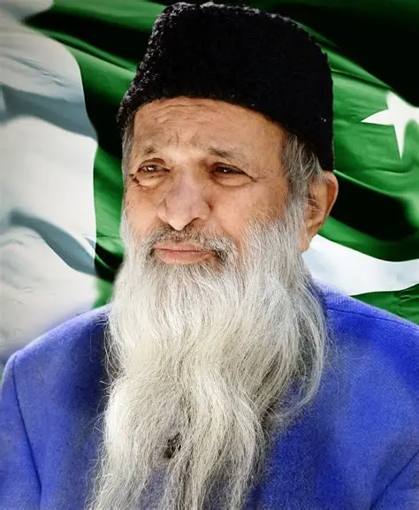

Abdul Sattar Edhi
A humanitarian whose compassion crossed every boundary, leaving behind a legacy of service, kindness and humanity.
Explore His Journey
Abdul Sattar Edhi
1928 — 2016
No religion is higher than humanity.— Abdul Sattar Edhi
A Legacy Built on Compassion
Abdul Sattar Edhi was one of Pakistan's most respected humanitarian figures. Born in 1928, he dedicated his entire life to helping people regardless of their religion, background, social status or nationality.
His journey began with a small dispensary and grew into one of the world's largest volunteer-based welfare organizations. Edhi believed that humanity should come before differences.
He lived a remarkably simple life and personally participated in charitable work, ambulance services, orphan care, shelters and countless humanitarian initiatives.
Service
He dedicated his life to serving people in need.
Equality
His humanitarian work welcomed everyone without discrimination.
Compassion
His greatest philosophy was simple: help humanity.
Numbers That Tell a Story
A Journey of Humanity
The Beginning
Abdul Sattar Edhi was born in Bantva, Gujarat, British India.
A Small Beginning
He established a small free dispensary to help people who could not afford medical treatment.
Edhi Foundation
His humanitarian efforts expanded into a wider welfare organization.
Recognition
Edhi received the Ramon Magsaysay Award for Public Service.
Global Recognition
His humanitarian work continued to receive international recognition.
A Lasting Legacy
Abdul Sattar Edhi passed away, leaving behind a legacy that continues to inspire millions.
One Man.
Millions Inspired.
Edhi's greatest achievement was not simply building an organization. It was creating a culture of compassion. His life demonstrated that meaningful change can begin with one person choosing to help another.